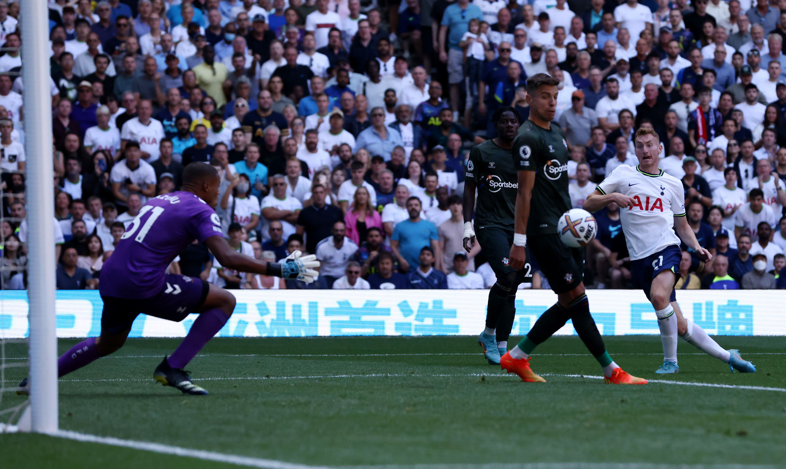
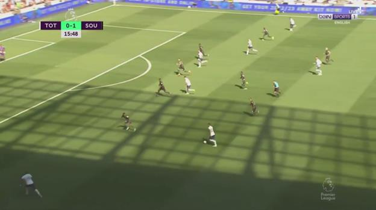
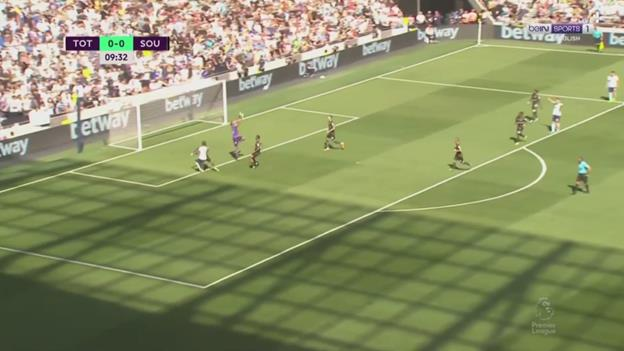
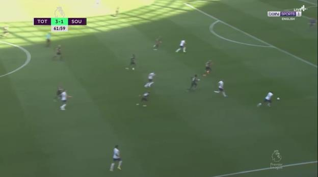
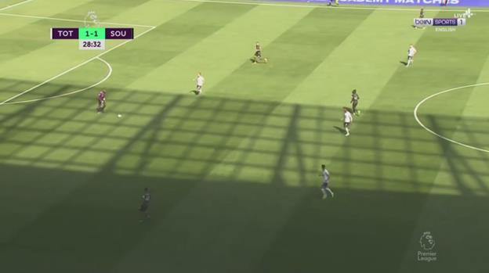
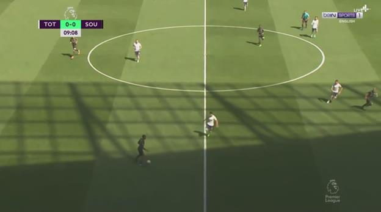
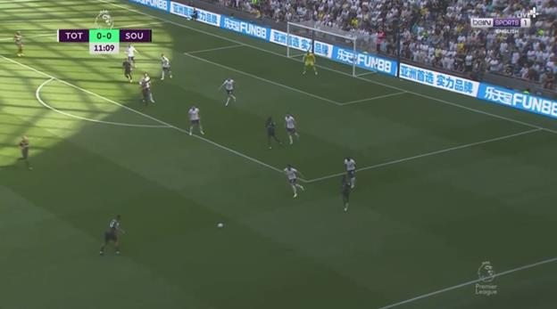

(Photo by Tottenham Hotspur FC/Tottenham Hotspur FC via Getty Images)
With the new season getting underway, Tottenham and Southampton faced each other at St.Marys to get off to a good start to the campaign.
Tottenham comes into the season having made 7 signings and Champions League football for this season while Southampton will be eager to avoid a repeat of their 15th place finish from last season.
Southampton definitely comes in with a statistical disadvantage with Hasenhuttl having the worse losing record for a manager on opening day with a staggering 100% losing record.
The game ended 4-1 for Spurs as they snatch 3 points from behind to cruise past Southampton away thanks to goals from Sessegnon, Dier, a Salisu own goal, and Kulusevski while Southampton got the
opening goal from a volley effort by James Ward-Prowse.
Tottenham in Possession
Tottenham looked to play it slowly out from the back before transitioning to playing it from the sides to put in a cross for players inside the box to receive.
With both Sessegnon and Emerson given the green light to push wide and high, Davies and Romero were consequently also allowed to push slightly higher to aid in the attack.
To make sure the build-up isn't stuck at Dier, one of the midfielders would drop down to help play the ball out.

In order to give the wingbacks enough space to cross we see the Tottenham front get very narrow to drag Djenepo and Walker-Peters in to make Southampton concede the wider regions to Sessegnon and Emerson.
This ended up costing Southampton 2 goals as their narrow formation meant players on the side were able put in crosses into the box without much pressure from the opposition wingbacks. Walker-Peters on the
right side was especially the weak link to the Southampton defence as his lack of positional awareness when the cross comes in lead to both Sessegnon and Dier to find space behind him to get at the end of a
cross.

In order to combat this, Southampton stopped defending narrowly in the 2nd half, but this ended up costing them a goal as well as the wider formation and a pushed-up Romero meant 2 players - Salisu and Djenepo -
had to pick which players to mark with 3 players on their flank.
Kulusevski who dropped down to receive a ball dragged both Djenepo and Salisu with him which ended up giving Emerson loads of time on the right side to take his touch and move into a more dangerous position
that ultimately helped him assist Kulusevski in scoring the 4th goal of the game.

Southampton in Possession
Southampton had a heavy reliance on their midfield to create and switch the ball left and right to provide options for attack. Their wingbacks were not pushed as wide as Tottenham had but wide enough to
cause a problem and score a goal against the Tottenham defence.
When playing out from the back Southampton opted to push Walker-Peters and Djenepo higher, allow Valery and Salisu wider and have one of the Southampton midfields drop deeper to help play the ball out.
Unlike Tottenham who had 3 players building out from the back, Southampton had 4 but this didn't matter as Tottenham's man marking system prevented them from doing much until the ball was in Southampton's
midfield line.

When Southampton were able to get the ball through the press and positioning of the Tottenham players, they looked to make runs into the half spaces after those areas were left empty by Tottenham wingbacks
trying to mark the Southampton counterparts.
This method of attack was unsuccessful as it ultimately was just being cut off by the Tottenham midfielders who were onto the Southampton midfielders making the run.

Southampton were able to capitalize on Tottenham's narrow 5-2-3 defensive formation though as the narrow and flat backline meant an overhit cross would end up with the wingback on the opposite side who
was wider than the Spurs wingbacks.
This was how Southampton were able to create their first and only goal as a cross coming in from the right side was hit away by Romero, but the narrow formation meant Djenepo was wide open on the
other side and was able to drive deeper into the box before making a cross towards the edge of the box for Ward-Prowse to finish.

Overall, Tottenham were the deserved victors of this encounter despite giving away the opening goal. Southampton has a lot to work out if they want to avoid a repeat of last season but this heavy loss
against Tottenham isn't the best way to start a fresh campaign.
Southampton's approach of signing young players is a fantastic way to build the squad in the long term but having inexperienced players starting against a big 6 might not be the best idea if
they wanted a result out of the game. That being said Lavia and Salisu were definitely standouts for this Southampton side - apart from Ward-Prowse - despite the 3-point loss.